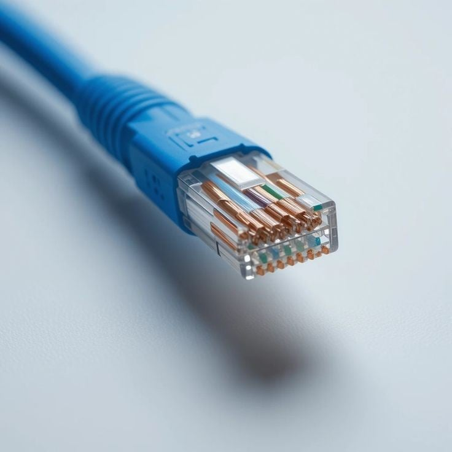

Car Brand Detection
Roboflow • Object Detection
An object detection project in Roboflow. I labeled 21 images and trained a model that reached around 81% mAP@50:95.
BSIT Student • Mindoro State University
Roboflow • Object Detection
An object detection project in Roboflow. I labeled 21 images and trained a model that reached around 81% mAP@50:95.

Cat6 • RJ45
Learning how to prepare Cat6 cable and connect it to an RJ45 plug for a wired network.
Windows 10 / 11
Installing Windows on a computer and fixing common problems such as stuck updates.